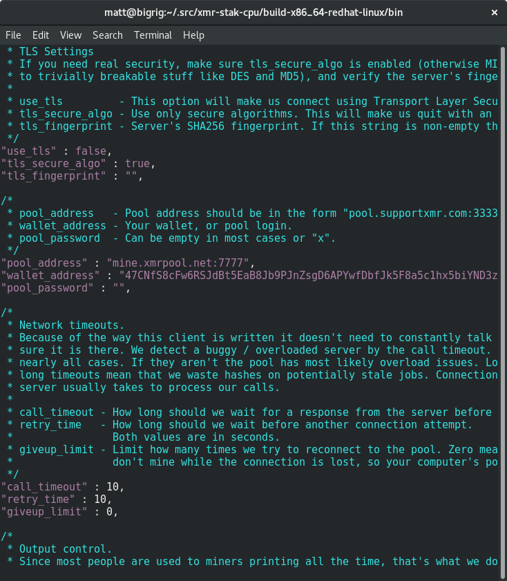

Choisir un pool
Il y a de nombreux pool parmi lesquels choisir, une liste est disponible sur moneropools.com. Miner sur un grand pool signifie des paiements plus fréquent, mais miner sur un pool plus petit permet de maintenir la décentralisation du réseau.
Choisir un mineur
Tout comme pour les pools, il y a de nombreuses applications d'extraction minière parmi lesquelles choisir. Celle que vous sélectionnerez dépendra du matériel sur lequel vous aller miner. Ce guide va se concentrer sur un mineur pour CPU, et utilisera xmr-stak-cpu. Alternativement, vous pouvez utiliser wolf's CPUMiner ou sgminer-gm. Cependant, leurs configurations sont légèrement différentes et ne seront pas abordés dans ce guide.
Pour Windows
Si vous utilisez Windows, le développeur de xmr-stak-cpu fournit des binaires à télécharger sur page GitHub Version.
Téléchargez et décompressez xmr-stak-cpu-win64.zip à un endroit où vous pourrez
le retrouver.
Pour d'autres systèmes d'exploitation
Si vous n'utilisez pas windows, vous devrez compiler xmr-stak-cpu vous-même, heureusement ce n'est pas si difficile qu'il n'y parait. Avant de pouvoir compiler le mineur, vous devez installer certains de ses prérequis.
Pour les distributions basées sur Debian :
sudo apt-get install libmicrohttpd-dev libssl-dev cmake build-essential
Pour les distributions basées sur Red Hat :
sudo yum install openssl-devel cmake gcc-c++ libmicrohttpd-devel
Après cela, vous n'avez plus qu'à utiliser cmake pour générer les fichier nécessaires, lancer make et copier le fichier de configuration :
mkdir build-$(gcc -dumpmachine)
cd $_
cmake ../
make -j$(nproc)
cp ../config.txt bin/
cd bin
Ne criez pas victoire tout de suite, car le mineur doit encore être onfiguré. Lancer le mineur maintenant devrait vous donner un bloc de texte à copier et coller :

Ouvrez config.txt et remplacez les deux lignes "cpu_threads_conf" avec le
texte que vous venez de copier. Après-coup, voici à quoi cela devrait recembler :

Descendez dans le fichier jusqu'à trouver le ligne contenant "pool_address".
Remplacez le contenu du second jeux de guillements avec l'adresse et le port du
pool que vous avez précédemment choisis. Vous pourrez trouver ces informations sur
le site web du pool.
Saisissez l'adresse de votre portefeuille entre les guillemets sur la ligne "wallet address". Vous pouvez laisser le mot de passe vierge, sauf avis contraire du pool.
Après cela, votre configuration devrait ressembler à ceci :

Lancer le mineur
Sauvegardez le fichier de configuration et lancez le mineur !

Certains pools vous permettent d'observer votre taux de hachage en collant votre
adresse sur leur site web. Vous pouvez également surveiller votre taux de hachage en
tapant la touche h.
Ajuster le lgiciel d'extraction minière
Vous pourriez voir des messages désagréables comme ceci :
[2017-07-09 12:04:02] : MEMORY ALLOC FAILED: mmap failed
Cela signifie que vous pourriez obtenir une amélioration du taux de hachage d'environ 20% en activant les pages larges.
Pages larges sur linux
Tout d'abord, arrêtez le mineur (s'il est en fonctionnement), lancez la commande suivante pour activer les pages larges puis redémarrez l'application d'extraction minière en tant que root :
sudo sysctl -w vm.nr_hugepages=128
sudo ./xmr-stak-cpu
Pages larges sur Windows
Comme expliqué dans config.txt:
By default we will try to allocate large pages. This means you need to "Run As Administrator" on Windows You need to edit your system's group policies to enable locking large pages. Here are the steps from MSDN
- On the Start menu, click Run. In the Open box, type gpedit.msc.
- On the Local Group Policy Editor console, expand Computer Configuration, and then expand Windows Settings.
- Expand Security Settings, and then expand Local Policies.
- Select the User Rights Assignment folder.
- The policies will be displayed in the details pane.
- In the pane, double-click Lock pages in memory.
- In the Local Security Setting – Lock pages in memory dialog box, click Add User or Group.
- In the Select Users, Service Accounts, or Groups dialog box, add an account that you will run the miner on
- Reboot for change to take effect.